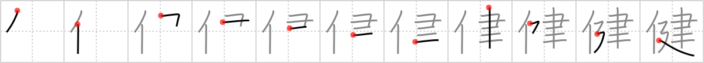

健
← →
healthy

Reading:
On-Yomi: ケン — Kun-Yomi: すこ.やか
Heisig story:
Person . . . build.
Koohii stories:
1) [dingomick] 23-8-2007(125): Mr. T in a public service announcement yells, "I'm healthy because every day I build a food pyramid, foo!".
2) [Danieru] 9-7-2008(88): "Mr.T, sir, how do you stay so healthy?" I asked. "Simple, foo," he answered, "you gotta build the body up by bodybuilding!".
3) [radical_tyro] 22-8-2006(26): Mr. T is so healthy he can build an entire building all by himself! (After he eats his 納豆 .).
4) [uberclimber] 20-3-2011(13): Jedi build healthy minds and bodies with their way of life. 健康 (けんこう) : health, sound, wholesome; 健やか (すこやか) : vigorous, healthy, sound.
5) [mantixen] 6-7-2009(11): In order to build her club, Haruhi needs to stay healthy.